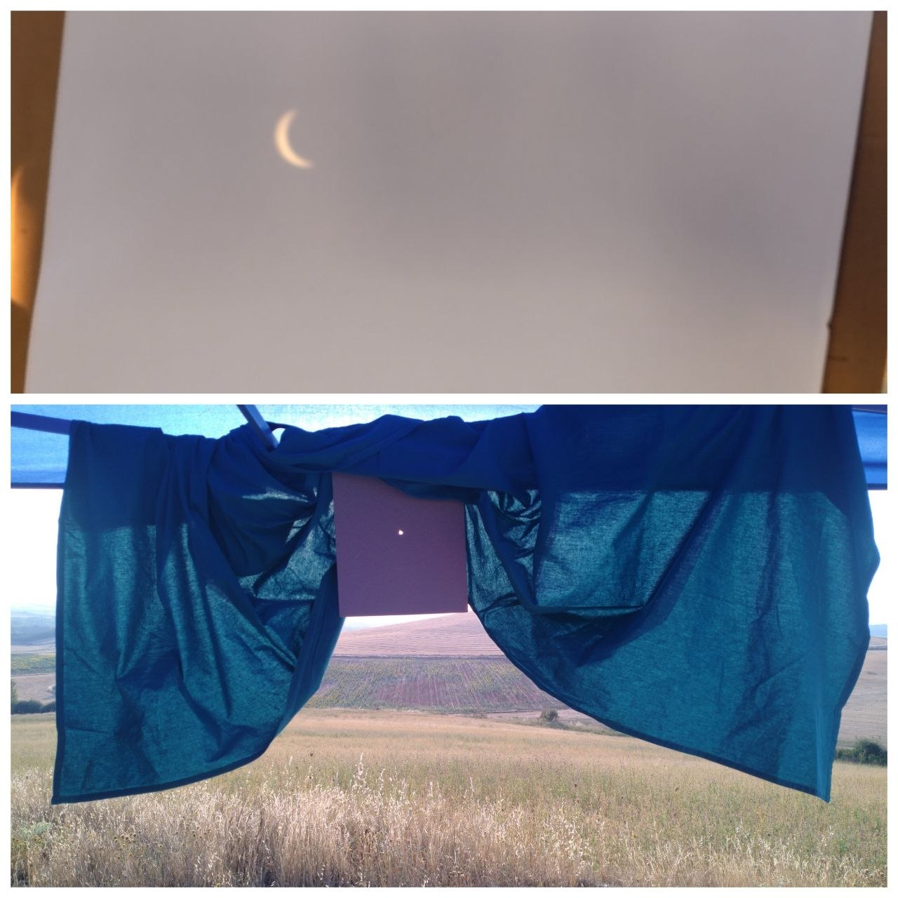
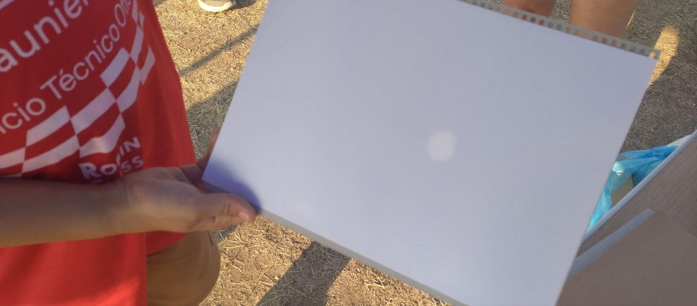
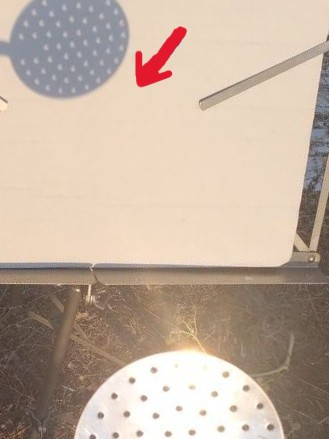
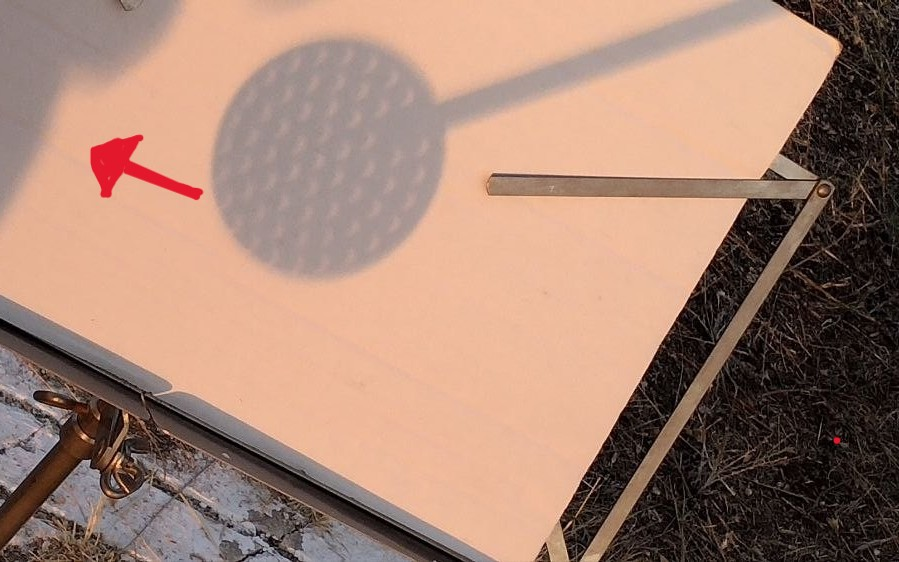

Homemade Projection Experiments
I wanted to explore the eclipse using simple optical experiments made from everyday materials. Instead of observing the Sun directly, I used small openings to project its image onto a white surface.
1. A Homemade Pinhole Camera

I used a Pringles tube to create a simple camera obscura. A small aperture allowed sunlight to enter the tube and form an image of the Sun on the projection surface.
The physics: light travels approximately in straight lines. When the aperture is sufficiently small, rays coming from different points of the Sun can form an image on the opposite surface.
The image is inverted because rays from the upper part of the Sun reach the lower part of the projection surface, while rays from the lower part reach the upper part.
2. Projecting the Sun Through a Fruit Colander

I then used a fruit colander containing many small openings. Each opening produced its own projection of the Sun, creating a pattern of multiple solar images.
Why are there many Suns? Each opening acts approximately as an independent pinhole. Because the Sun is an extended light source rather than a point source, each opening can form an image of the solar disk.
During an eclipse, these projected images can reproduce the changing apparent shape of the partially covered solar disk.
3. Projecting the Eclipse

I projected the Sun onto a white cardboard screen and was able to follow the changing shape of the solar disk as the Moon moved across it.
An important observation: the projected image is not simply the shadow of the Moon. It is an image of the Sun formed by the geometry of the light passing through the small aperture.
As the Moon covered an increasing fraction of the solar disk, the shape of the projected image changed accordingly.
4. Continuing the Projection Experiment: The Skimmer
I continued the same pinhole projection experiment using a kitchen skimmer. Instead of a single aperture, the skimmer contains many small openings. Each opening can act approximately as an individual pinhole, allowing multiple images of the Sun to be projected simultaneously.


Photo on the left — incoming light: sunlight arrives at the kitchen skimmer from the direction of the Sun. The small openings act approximately as individual pinholes through which the sunlight enters.
Photo on the right — outgoing light: after passing through the openings, the light continues toward the projection surface. Each opening can produce its own image of the partially eclipsed Sun.
The two photographs show the same optical process: sunlight enters the apertures of the skimmer and the transmitted light produces multiple images of the solar disk on the projection surface.
The physical phenomenon: pinhole projection. Each small opening in the skimmer acts approximately as a pinhole. Because the Sun has a finite angular size, light arriving from different points of the solar disk travels in slightly different directions.
Each opening can therefore form its own image of the Sun. Since the skimmer contains many openings, many solar images appear simultaneously on the projection surface.
The skimmer therefore acts as an array of simple pinhole projectors. This experiment is a direct continuation of the camera obscura experiment made with the Pringles tube.
Safety: The projection method is indirect, but the Sun should never be viewed directly through the openings of the skimmer. The observer should look only at the projected image on the screen.
What I learned from these experiments.
These experiments showed that sophisticated optical equipment is not always necessary to demonstrate fundamental principles of optics. With a small aperture, a projection surface and sunlight, it is possible to observe the changing geometry of the solar disk during an eclipse.
The Pringles tube and the kitchen skimmer demonstrate the same underlying principle: the formation of an image through small apertures. The difference is that the homemade camera uses one principal aperture, whereas the skimmer provides many apertures operating simultaneously.